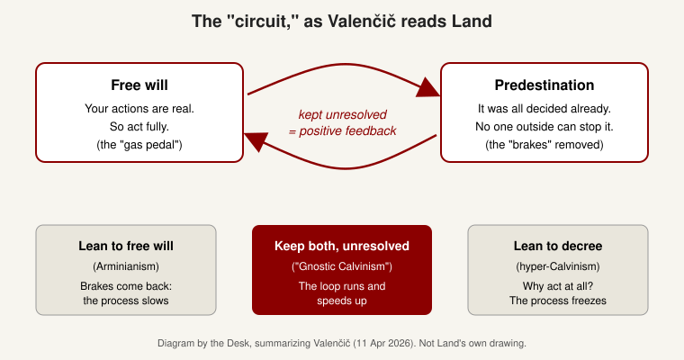
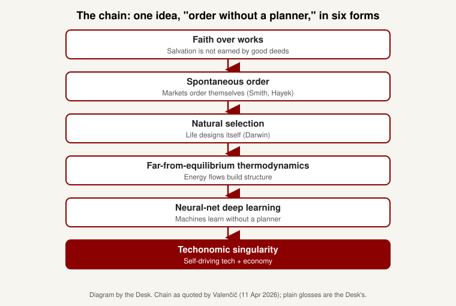

Cypherboria backgrounder · 4 November 2026 · Back to the section
"Gnostic Calvinism" is a label Nick Land has used in interviews and on X since at least January 2026 for the mood he sees at the end of the Anglo-Protestant tradition, especially around AI. He calls it "a very tentative label." Taken from two old religious ideas, it pairs a Calvinist sense that the end is already decided (AI doom) with a Gnostic sense that the world we see is an illusion (the simulation hypothesis). Its best-known explainer, Maks Valenčič, reads it as a machine: believe both that your actions are free and that everything is already decided, refuse to settle the contradiction, and nothing is left to slow the process down. It is a philosopher's provocation, not a church or a movement.
In Land's own most detailed account (a January 2026 interview with Vincent Lê), Gnostic Calvinism names a pair of beliefs that many people in AI hold at the same time: that building superintelligent AI will probably kill us (a catastrophe that is coming, which he links to Calvinism's fixed, decreed future), and that we are probably already living in a computer simulation (the hidden truth behind a false world, which he links to Gnosticism). He finds it striking that the same people believe both, and says, "as a Gnostic Calvinist, you are a Gnostic Calvinist." Valenčič's essays push this further, into a general theory: keeping two opposite beliefs open, rather than resolving them, works like a feedback loop that speeds things up.
Calvinism: the Protestant tradition that follows John Calvin (1509 to 1564). Its signature teaching is predestination: God decided before creation who would be saved (the "elect"). Salvation is a gift, not something earned by good deeds. This is the "faith over works" idea of the Reformation.
Predestination versus free will: the old puzzle. If everything is decided in advance, how can people be responsible for their choices? Mainstream Calvinism says both are true. God decrees everything, yet people choose freely and are responsible. It calls the fit between them a mystery, or explains it with "secondary causes" (God works through human choices rather than overriding them).
Arminianism: the rival Protestant view, named after Jacobus Arminius (1560 to 1609). It gives more room to free will, saying people can accept or reject grace. Methodists are the best-known Arminians.
Hyper-Calvinism: a fringe position, rejected by mainstream Calvinists, that leans so hard on predestination that preaching to outsiders or urging people to repent seems pointless. Valenčič uses it as the example of decree crushing action.
Gnosticism: a group of movements in the early Christian centuries teaching that the material world is a prison or illusion made by a lesser power, and that salvation comes through secret knowledge (gnosis) of the true reality behind it. Land uses "Gnostic" for the simulation idea, since "the world is a fake made by higher beings" is the Gnostic story in tech dress.
Accelerationism: the idea, linked to Land since his work at Warwick University in the 1990s, that capitalism and technology form a runaway process that should not or cannot be stopped. In Land's version, humans do not steer it.
Cybernetic positive feedback: cybernetics is the study of control and feedback. Negative feedback keeps things steady (a thermostat turns off the heat when it gets warm). Positive feedback amplifies itself (a microphone near a speaker squeals louder and louder). Land has long described capitalism and AI as positive feedback. Gnostic Calvinism, in Valenčič's reading, is that loop in religious language.
Sources: Britannica: Calvinism · Britannica: Arminianism · Britannica: Gnosticism · The Guardian on accelerationism (Andy Beckett, 2017)
Valenčič's argument, in ordinary words: Christian thinkers have spent centuries trying to make predestination and free will fit together comfortably. Lean toward free will (Arminianism) and you get a world of moral judgment and correction, which acts as brakes. Lean toward predestination (hyper-Calvinism) and people stop acting, which freezes things. Smooth it over with careful theology and the tension goes quiet.
Gnostic Calvinism, he says, does none of these. It keeps both sides fully on. Free will says your actions are real, so act all-out. Predestination says even your all-out action was already decided, so there is no higher place from which anyone could stop, overrule or audit it. Put together, the result is not passivity but an agent with no brakes. That is the "positive feedback" in the diagram below.
He then applies the same shape to history. Land, he writes, traces one sequence: "Faith over works → Spontaneous order → Natural selection → Far-from-equilibrium thermodynamics → Neural-net deep-learning → Techonomic singularity faithful to The Lofty Powers." Each step is the same idea in a new field: order arises without a planner at the top. "Techonomic" is Land's word for technology and economics fused into one process. "The Lofty Powers" is Land's jokey, deliberately religious name for whatever is driving the process.


Land posts mostly on X as @xenocosmography. He has not, as far as the Desk can find, written a long essay titled "Gnostic Calvinism." The term lives in interviews, talks and short posts. These are the dated sources the Desk could open.
“I haven't yet done a careful reading of Calvin's Institutes of the Christian Religion. It's a very tentative label in this way.”
Nick Land, interview with Vincent Lê, 13 January 2026 · A Conversation with Nick Land (Part 1)
“What it's pointing to really is a sense of the kind of cultural complex that we find ourselves in at the end, I would say, particularly of the Anglo-Protestant Whig tradition.”
Nick Land, 13 January 2026 · Vincent Lê interview
“So the Calvinist side is to do with certain, it's a thinking about time, thinking about apocalypse, particularly in its catastrophic or disastrous sense. And the Gnostic side is thinking about apocalypse in its revelatory sense of unconcealment, of passing beyond the veil of illusion.”
Nick Land, 13 January 2026 · Vincent Lê interview
“My assumption is that this is apocalyptic, and the apocalypse is revelation. So you cannot have a revelation of the apocalypse prior to the apocalypse.”
Nick Land, 13 January 2026 · Vincent Lê interview
“Spontaneous order—or, you know, it's Adam Smith, it's Darwin... It's all about spontaneous order, about distributed systems without some superordinate controlling instance producing these emergent intelligent outcomes. It's obvious one side is the theological conception.”
Nick Land, 13 January 2026 · Vincent Lê interview · ellipsis marks words cut by the Desk
“Anglotheosophical Oblique Escalation -- the oven-baked version.”
Nick Land (then @Outsideness), 3 May 2023 · post on X · the earliest dated use of the phrase the Desk found. It quotes another user's photo of a collapsed homemade loaf, so it is a joke
“I have always said the first Whig was the devil.”
Samuel Johnson, as quoted by Nick Land, 13 April 2023 · "The Devil's Work," Compact · Land's essay on Milton, rebellion and the English Whig tradition. Most of it is behind a paywall; the Desk read only the opening
“The Invisible Hands (plural essentially), or Spontaneous Order are the more canonical Anglo-Protestant terms for this.”
Nick Land, 9 October 2026 · post on X
“Gnostic Calvinism T-shirt slogan seen recently: "Theology is not just an '-ology' it's the -ology." Hope this helps.”
Nick Land, 11 October 2026 · post on X
“Left Singularity is unfortunately promised by The Lofty Powers. Buckle up.”
Nick Land · post on X · the Desk saw this only as a repost and did not open the original, so its date (likely September 2024, from the post ID) is unconfirmed
Milton and Satan: Land's point, as the opening of "The Devil's Work" shows, is that England made Milton, a religious rebel who gave Satan the best lines in Paradise Lost, its national poet, and that English history keeps rewarding rebels. Valenčič builds on this: in a predestined world even Satan's rebellion is part of the plan, so no rebellion stands outside it.
Maks Valenčič runs the Substack Psychotic Savoir, which reads Land through Lacanian psychoanalysis. His "Gnostic Calvinism Explained" came in two parts.
Part 1 (11 April 2026), subtitled "Decoding Nick Land's Anglotheosophical Oblique Escalation," makes the argument above. The contradiction is "not an obstacle to the system, but its engine." Satan, from Milton, shows "rebellion without exteriority." The "Elect" (God's chosen) "do not steer the loop... They ride it." The "gnosis" is not secret doctrine but recognizing "the loop includes one's own recognition of the loop."
Part 2 (12 April 2026), "P(doom), Simulation, and the Diagonal Logic of Apocalypse," ties this to the Vincent Lê interview. AI doom says "the end is coming," the simulation view says "the end has already happened," and Valenčič reads them as two halves of one idea of apocalypse, which he calls "diagonal": crossing two opposites without merging them.
Note what is Land and what is Valenčič. The interview supports the doom and simulation pairing. The "free will and predestination as an engine" reading, and the strong positive-feedback claim, are mainly Valenčič's.
Sources: Valenčič, part 1 · Valenčič, part 2
Mainstream Reformed theologians would reject it. The Westminster Confession, the 1646 standard of Presbyterian belief, says God's decree means "neither is God the author of sin; nor is violence offered to the will of the creatures, nor is the liberty or contingency of second causes taken away, but rather established." That is exactly the careful reconciliation Valenčič calls a way of making the contradiction "safe." To Calvinists, predestination is about salvation by a personal God, not about markets, evolution or AI. Gnosticism was condemned as heresy by the early church, and Calvin's tradition shares that verdict. The label puts together two things the tradition treats as opposites.
Land admits it is unfinished. He said he had not yet read Calvin's main work carefully and called the label "very tentative." Much of his use of it on X is ironic (the T-shirt slogan, a "Gnostic Calvinism sermon").
On style: one reader commented under part 1 (8 May 2026), "Unreadable AI garbage." That is one commenter's opinion, not a finding. In a reply in the same thread, the author wrote that he "could have polished the text better, even if it was written with the help of AI." The Desk reads that reply as acknowledging some AI help, but it does not say how much.
Other commentary is thin and mostly from inside the Land fan scene: a wiki page on timewar.org and pieces on small Substacks. The Desk found no academic article or Urbanomic publication on Gnostic Calvinism specifically, and nothing on it from Vincent Garton or Edmund Berger. A few followers argue with Land in replies, for example a Catholic poster calling an idea "traitorous to gnostic calvinism."
Sources: Westminster Confession of Faith (Ligonier) · Comments on part 1 · timewar.org on Land
Gnostic Calvinism is now Land's main frame for talking about AI, and it comes up in his recent talks and streams. It explains why he can sound cheerful about events many people find alarming: if the process is decreed and no one stands outside it, judging it from above makes no sense. It also helps decode lines like "The Lofty Powers" in his posts. The Land and Flynn watch-along has timestamps where these themes come up.
See also: Nick Land and Conrad Flynn in conversation: watch-along
See also: Conrad Flynn backgrounder
| Anglotheosophical Oblique Escalation | Land's half-joking phrase. "Anglo": the English-speaking Protestant world. "Theosophical": divine wisdom. "Oblique": sideways, indirect. "Escalation": speeding up. Together: the English-speaking world's religion-shaped way of speeding up, indirectly and without a plan. |
| Elect | In Calvinism, the people God chose for salvation. For Valenčič, those who see the loop and ride it. |
| Decree / providence | God's plan for everything, and God's guidance of events according to it. |
| Diagonal | Land's and Valenčič's word for crossing two opposites without picking one or blending them. |
| Gnon | Land's older (Xenosystems era) name for "Nature or Nature's God": the hard rules of reality, treated as a god-like force without assuming any real god. Lofty Powers plays a similar role now. |
| Lofty Powers | Land's jokey religious name for whatever drives history and technology. |
| P(doom) | Tech slang for one's estimated probability that AI causes human extinction or disaster. |
| Simulation hypothesis | The idea, popularized by philosopher Nick Bostrom in 2003, that we may be living in a computer simulation run by a more advanced civilization. |
| Spontaneous order | Order nobody designed, like prices in a market or language. Associated with Adam Smith and Friedrich Hayek. |
| Techonomic singularity | Land's term for the point where technology and economics, fused, outrun human understanding and control. |
| Whig tradition | The British view of history as steady progress toward liberty, with rebels and reformers winning. Land treats it as Protestant at root. |
| Xenocosmography | Land's current X handle and the name of his recent project. Roughly "mapping the alien cosmos." |